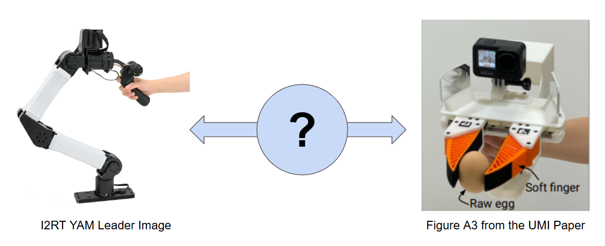
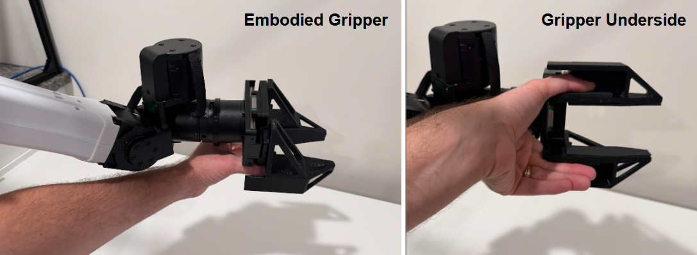
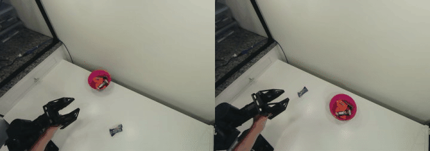
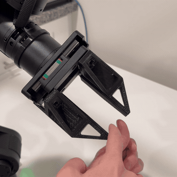
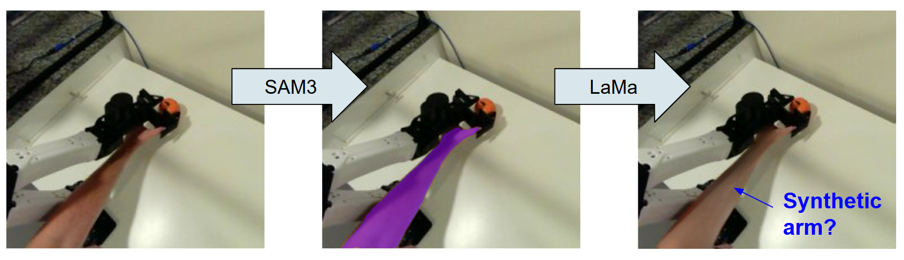
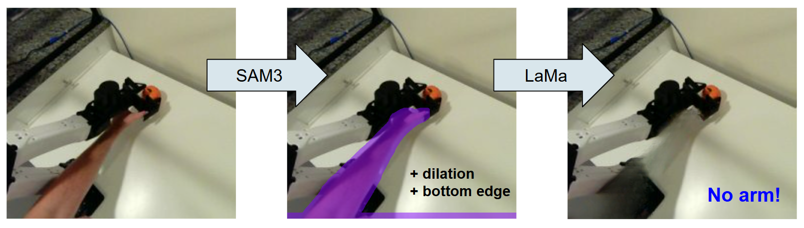
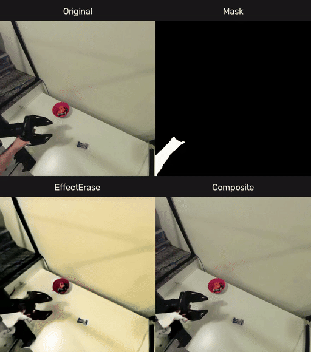
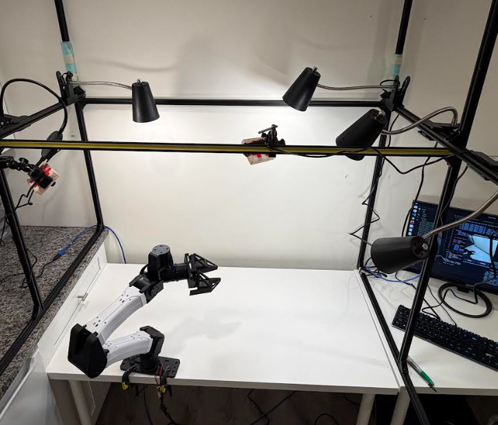
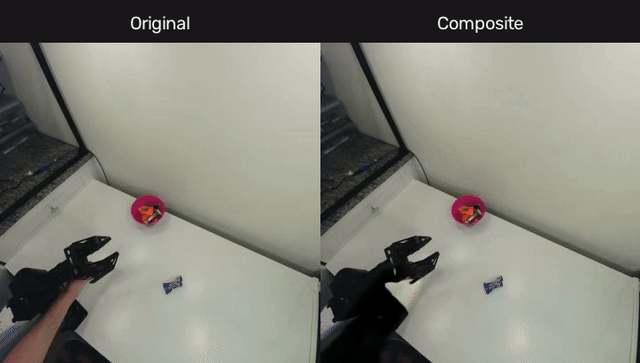

Embodied YAM Gripper
For Hands-On Data Collection
While setting up my home YAM workstation I became interested in how I might collect demonstration data for the platform without the awkwardness of a joystick or the expense of a second arm for a leader/follower setup. I really wanted to find a way to use my own hands to collect data, and I find this is an area I return to often: what is the right interface for a human to operate a robot that is both useful and intuitive?
A really nice paradigm that has become popular lately is a UMI-style gripper that you carry around on/in your hand and operate in free space. If you can record position, orientation, gripper actuation, and onboard cameras, you can ideally train a policy on this data and reproduce the behaviors on a robotic arm with an end-effector centric control scheme. Variants like Sunday's three-fingered glove and Generalist's yellow pinchers allow a data collector to use their own hands much more immediately than a teleop scheme that is removed from the actual platform.
However, a teleoperated arm in a controlled space also has some helpful attributes, namely that a collected demonstration is exactly how the robot itself would move to achieve that same task autonomously. There is no mismatch in achievable poses or forces because the robot itself is involved in the collection loop. But, personally I find the gap between the operator and the robot in most teleoperation to be fairly unintuitive. Often the platform you are controlling is several feet away, maybe lagging behind your motions a bit, hurts your neck to look at, and you never really feel in control.

A very appealing midpoint between these two collection schemes is an exoskeleton: a human can embody the robot itself, and therefore by performing motions through the robot, the robot itself also "experiences" the trajectory. While I do not have an exoskeleton to present here, I do think I have a nice middle ground in the form of a hollow YAM gripper that I can operate with my own hand. I am calling this an "embodied gripper", but open to better naming ideas.
This post has two halves: (1) explaining the gripper and how to use it, and (2) a lot of time devoted to a major side-effect: your own arm is in all of the videos during data collection! Some care needs to be taken to amputate said arm from the final dataset.
Gripper V1
After seeing the YAM zero gravity mode I had the idea for a gripper that I could "drive" with my own hand, but that remained attached to the YAM itself. This took a bit of CAD practice, but I was able to put together a chunky prototype. The fingers of a standard gripper are widened considerably, reduced to an open shell structure, and are dropped down to sit underneath the end effector. This allows a user to place their thumb and pointer finger inside the gripper itself:

This takes a bit of practice, but honestly is pretty intuitive once you get used to your hand becoming a plastic tong system. Sitting on a stool next to the table, I can quickly and easily perform pinching grasps and move objects around. Here are some views from an overhead camera:

Note that one side-effect of this is that the gripper is now out of view of the standard YAM wrist-camera mount, so there is no wrist camera included in these pictures. I am waiting for some modified brackets to arrive that should provide a better view. There is also a gripper version 2 that I am waiting on, which is not fully open at the bottom. This should make it much easier to drag the gripper down towards the table surface.
Torque Balancing
An unexpected hiccup with getting this to work right away: it is pretty difficult to open the gripper once it is closed, because you need to back-drive the gripper motor while opening your hand. This is not a motion where humans can exert a lot of strength, and I found that I got tired really quickly.
However, the closing motion is comparatively easy, which lead to a nice fix: during demo collection, the gripper motor can be biased to exert torque the opens the gripper. Not enough to actually move the gripper, but almost enough to open it. This means that as soon as you get the gripper opening, it glides with your hand. You have to work a little harder to close the gripper, but again this is a considerably easier feat than opening, well worth the extra effort.
Here is an animation showing the bias: once I push the gripper open, the extra torque does a lot of work to keep things moving:

Image In-Painting with SAM and LaMa
We now need to address the major impact of collecting data with this gripper: all overhead camera views show my own arm.
Note: Given a bit of data of the robot with / without my arm in the frame, there are probably really strong learned solutions that could fix this, and I will probably try those once I have enough data. For example, my style transfer experiments from last year. But I don't have that data yet, and it is not realistic to have that for a single new task. So here I tried to in-paint my hand with some off-the-shelf models.
I initially tried to fix this with image in-painting. The idea would be that I use a segmentation model (SAM3 in this case) to segment my arm, and an image in-painting model to replace it. I tried LaMa with some curious results: the model seemed to infer that an arm was masked out, and supplied a new one:

It turns out that there are just so many context clues that an arm belongs in that space: the shadow on the table, a pinkish reflection on the arm, and a few flesh-colored pixels that did not make it into the mask. To force the model to supply background, I needed to dilate the mask and block out the bottom edge that had some stray skin:

This is... ok. A clear problem is going to be that this is just a really weird image for many inpainting models that are used to nice scenes of familiar objects. Given that this is kind of messy and would create lots of frame-to-frame artifacts, I started looking into video inpainting instead.
Video In-Painting with SAM and EffectErase
I found a newer work called EffectErase which has really impressive results. Not only does this claim to remove a masked object, but it also removes the effects of that object (shadows, reflects, etc), hence the name.
However, this also means that the model can (and should) make edits outside the masked area, so it is a bit dangerous. For the unfamiliar setting of a top-down view of a robot, I occasionally saw strange artifacts over the robot arm or wonky saturation / exposure. I eventually moved to a hybrid approach in which EffectErase edited the video, and then I blended the original frames back in with a dilated and feathered mask. However, this also preserves a lot of the shadow from my arm.
The steps are as follows:
Run SAM3 in video mode to get masks for each frame, using prompt "human arm".
Use original + masks to run EffectErase, which regenerates the video
Composite the original frames and the EffectErase frames together, using a dilated and feathered mask
This gives us:

Both of the bottom videos look pretty good to me. Part of the problem here is that the original lighting is bad. So before tinkering with this anymore, I went to Target and bought some lamps.
Let there be Light
Lamps!

This helps a lot. We are getting very close to a clean result. On the left is a recording from the well-lit environment and the resulting video after arm removal:

Remaining Artifacts
There are a few little things left:
There is consistently an area near the gripper that has a bit of my hand left.
The EffectErase video sometimes has a different color than the original (almost like an autoexposure effect), creating a ghostly yellow or blue area where the videos are composited.
Some remaining shadow artifacts. This seems to be true even in the EffectErase videos with the updated lighting.
I am unclear on how heavily I should pursue these, since the fixes quickly become setup-specific and might not be generally useful. Even adding lighting is not always going to be possible. Additionally, a lot of this might be handled with domain randomization during downstream learning: adding color variants, regions of changed exposure/saturation, noise, and artifacts.
The remaining shadow from my arm is really the only one above that worries me. This is a distinct visual feature that moves with the arm, and may require a custom dataset of scenes with/without the shadow to really handle well.
What's Next
Certainly what's next is to collect a bunch of data and train a flow policy. Highly likely my next post will be about the results of this on a simple task, and whether or not the arm shadow has wreaked havoc.
Beyond this there are some interesting directions that are enabled by having your hand and the gripper co-located at the end of the arm, mainly concerning how a human can supply immediate correction or guidance:
Data collection under perturbation: Instead of collecting nice trajectories, the arm itself could periodically perturb the demonstrator (gently!), and you could record how the human responds. This is sort of a preemptive DAgger approach in which you are trying to harvest corrections from the human's "policy". Paired with a few standard demonstrations I think this could be pretty powerful, although fairly annoying as the demonstrator.
Guidance / refinement of trained policies: Similarly for more standard corrections, you could train an initial policy that expects a human arm to be present, and allow joint control during policy deployment. The demonstrator could be mostly passive, but supply corrective forces at critical moments like grasping or placement. Balance would be needed between the two parties involved so that they can guide each other instead of fighting, and so that when push comes to shove the human's arm wins to avoid injury. Once this joint policy is refined really well, you could use the in-painting above to transfer it to a hands-free mode.
Recent Posts:
Embodied YAM Gripper
For Hands-On Data Collection
October 25, 2026
IROS 2026
Poster Presentation and Favorites
October 05, 2026
A Home Robocell
Planting a YAM in my Basement
October 02, 2026
More Posts